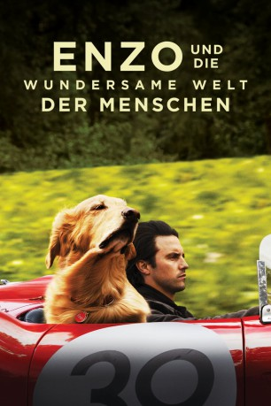

gesehen am 18.11.2019
gesehen am 18.11.2019Alternativ: The Art of Racing in the Rain (Englischer Titel) gesehen am 18.11.2019
 
 IMDB-Wertung: 7.5 / 10
IMDB-Wertung: 7.5 / 10  Tomatometer: 44
Tomatometer: 44  Metascore:
Metascore: 
Enzo und die wundersame Welt der Menschen basiert auf Garth Steins Bestseller und ist eine herzerwärmende Geschichte, die aus der Perspektive von Enzo, einem geistreichen und philosophierenden Hund erzählt wird. Durch die Freundschaft mit seinem Besitzer Denny Swift, einem aufstrebenden Formel 1 Fahrer, hat Enzo tiefen Einblick in das Wesen der Menschen bekommen.
Jahr: 2019
Dauer: 109 Minuten
FSK: 6
Land: USA Studio: Walt Disney Studios Motion PicturesTonspuren: DD5.1 - ,
Untertitel: Deutsch,
Auflösung: 1080p (1920x1040) Größe: 8335 MB
Genre: Drama, Komödie, Liebe, Sport
Regisseur: Simon Curtis
Drehbuch: Mark Bomback, Garth Stein
Soundtrack: Volker Bertelmann, Dustin O'Halloran
Darsteller:
 Kevin Costner als Enzo
Kevin Costner als Enzo Milo Ventimiglia als Denny
Milo Ventimiglia als Denny Gary Cole als Don Kitch
Gary Cole als Don Kitch Matthew Kevin Anderson als Fox Sports Reporter
Matthew Kevin Anderson als Fox Sports Reporter Amanda Seyfried als Eve
Amanda Seyfried als Eve Kathy Baker als Trish
Kathy Baker als Trish Martin Donovan als Maxwell
Martin Donovan als Maxwell Nicole Anthony als Midwife
Nicole Anthony als Midwife Ryan Kiera Armstrong als Zoë
Ryan Kiera Armstrong als Zoë Brian Markinson als Mr. Ness
Brian Markinson als Mr. Ness Al Sapienza als Luca Pantoni
Al Sapienza als Luca Pantoni Karen Holness als Vet
Karen Holness als Vet David Lewis als Prosecutor
David Lewis als Prosecutor Elizabeth Bowen als (uncredited)
Elizabeth Bowen als (uncredited) Michael Schumacher als Himself (archive footage) (uncredited)
Michael Schumacher als Himself (archive footage) (uncredited) Sam Waterston als Jack McCoy (archive footage) (uncredited)
Sam Waterston als Jack McCoy (archive footage) (uncredited)Datei: X:\2019(A-F)\Enzo und die wundersame Welt der Menschen (2019, FSK6, 1920x1040).mkv seit 16.11.2019
Festplatte: HD 2018(G-Z)-2019(A-Z)
 Es gibt insgesamt 60 Filme in der Gruppe '2019(A-F)'
Es gibt insgesamt 60 Filme in der Gruppe '2019(A-F)'